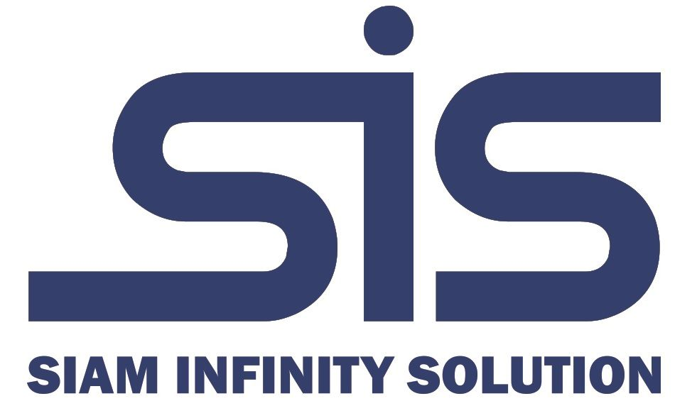

โครงสร้างพื้นฐานอัจฉริยะ
ออกแบบระบบอาคาร เครือข่าย และอุปกรณ์ควบคุมให้พร้อมต่อการเติบโตระยะยาว

SIS Siam Infinity SolutionServices
ออกแบบระบบอาคาร เครือข่าย และอุปกรณ์ควบคุมให้พร้อมต่อการเติบโตระยะยาว
วางระบบเครือข่าย ศูนย์ข้อมูล และ monitoring ให้สื่อสารได้มั่นคงตลอดเวลา
เพิ่มความปลอดภัยและความยืดหยุ่นของระบบด้วยแนวทาง cloud-ready ที่ตรวจสอบได้
เชื่อมระบบเดิมกับระบบใหม่ พร้อมดูแลหลังส่งมอบเพื่อให้ธุรกิจเดินต่อได้อย่างมั่นใจ
About SIS
SIS Siam Infinity Solution ช่วยองค์กรวางรากฐานระบบดิจิทัลตั้งแต่การสำรวจหน้างาน การออกแบบสถาปัตยกรรมระบบ ไปจนถึงการติดตั้งและดูแลต่อเนื่องหลังส่งมอบ
รู้จักเราOur Process
สำรวจความต้องการและสภาพแวดล้อมจริงของระบบ
จัดสถาปัตยกรรม เครื่องมือ และแผนติดตั้งที่เหมาะสม
ดำเนินงานด้วยมาตรฐาน ตรวจสอบ และส่งมอบเป็นขั้นตอน
อบรมผู้ใช้งาน ดูแลระบบ และต่อยอดตามเป้าหมายธุรกิจ
เริ่มจากการคุยโจทย์ธุรกิจ แล้วให้ SIS ออกแบบแนวทางที่ใช้งานได้จริงสำหรับทีมของคุณ
เราเชื่อว่าโครงสร้างพื้นฐานที่ดีต้องมองเห็นทั้งภาพธุรกิจ ความปลอดภัย และการดูแลระยะยาว ไม่ใช่แค่การติดตั้งอุปกรณ์ให้เสร็จ
SIS ช่วยรวมระบบอาคาร เครือข่าย ความปลอดภัย และ automation ให้คุยกันได้ เพื่อให้องค์กรบริหารงานง่ายขึ้น วัดผลได้ และพร้อมต่อการขยายระบบในอนาคต
ทุกโซลูชันต้องเริ่มจากโจทย์จริงของหน้างาน มีเอกสารที่ตรวจสอบได้ มีมาตรฐานการส่งมอบ และมีแผนดูแลหลังระบบเริ่มใช้งาน
โซลูชันสำหรับองค์กรที่ต้องการระบบเทคโนโลยีมั่นคง ปลอดภัย และต่อยอดได้
ออกแบบระบบอาคาร ระบบควบคุม อุปกรณ์ภาคสนาม และโครงสร้างดิจิทัลให้รองรับการทำงานจริง
วางระบบเครือข่าย switching, routing, wireless, server room และ monitoring สำหรับงานองค์กร
เสริมความปลอดภัยด้วย policy, access control, backup, cloud migration และการตรวจสอบความเสี่ยง
เชื่อม API, dashboard, alert, workflow และระบบเดิมขององค์กรให้ทำงานร่วมกันแบบมีประสิทธิภาพ
ร่วมสร้างระบบที่ทำให้ธุรกิจทำงานได้เร็วขึ้น ปลอดภัยขึ้น และพร้อมต่ออนาคต
ดูแลการวางแผน ติดตั้ง ทดสอบ และส่งมอบระบบเทคโนโลยีให้ลูกค้าองค์กร
ออกแบบและดูแลระบบ network, security, monitoring และ troubleshooting ในงานจริง
ประสานงานลูกค้า ทีมเทคนิค และเอกสารโครงการให้เดินหน้าอย่างชัดเจน
ส่งโจทย์ระบบหรือโครงการที่ต้องการให้ SIS ช่วยประเมิน ทีมงานจะติดต่อกลับโดยเร็วที่สุด
Start a Project
ใช้แบบฟอร์มนี้สำหรับเก็บรายละเอียดเบื้องต้นบนหน้าเว็บ ก่อนเชื่อมต่อระบบรับข้อความจริงในขั้นตอน production